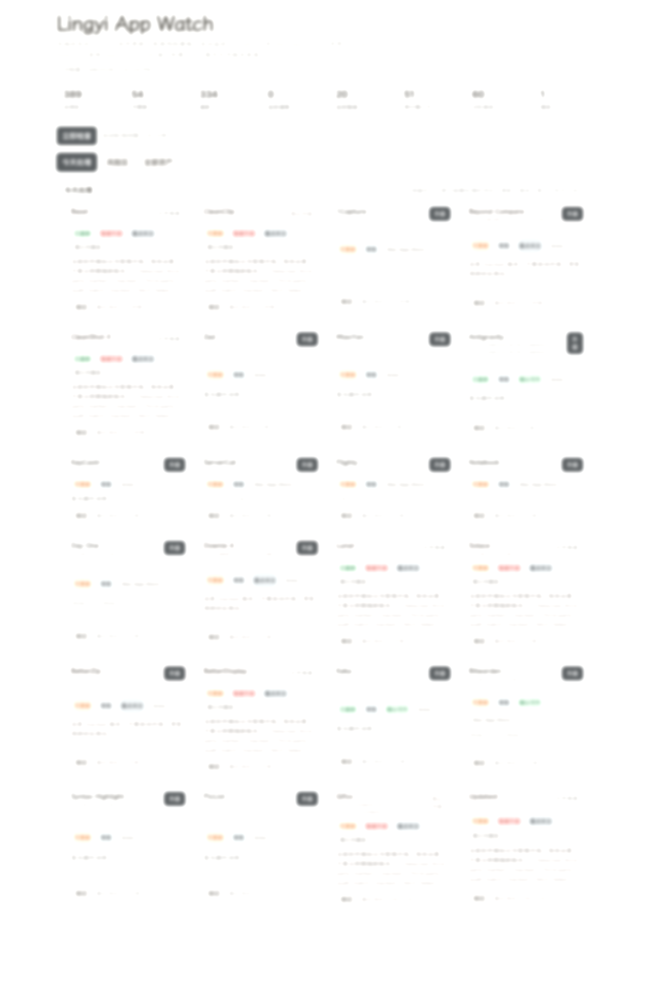

macOS 软件更新助手 · 本地运行 · v0.3.0
先看清，再决定升不升级。
把分散的软件更新、来源和风险收成一张清单。你看到的不只是新版本，还有它值不值得现在动。
为什么用它
更新来源不再分散
把 brew、App Store、GitHub、官网和手工配置放到一个地方看。
不是只提醒有更新
它会把第三方来源、谨慎升级和暂缓升级单独拎出来。
你的判断会留下来
“不要升级”“待核验”“重点关注”这类标记会继续参与排序和筛选。
界面
像一张会自己整理的软件清单
先看今天该处理什么，再看哪些软件暂时不要碰。
公开页使用的是脱敏预览图，只保留布局和信息层级。
开始使用
1
下载项目
先把项目拉到本地并安装依赖。
git clone https://github.com/Jascenn/local-software-update-monitor.git
cd local-software-update-monitor
npm install
2
启动面板
直接启动本地服务。第一次运行会自动生成配置，并尽量接入本机能自动识别的更新源。
npm run dev
3
开始整理软件
打开 http://127.0.0.1:4123，给敏感软件加标记，再按风险做决定。
常见问题
会上传我的软件列表吗？
不会。扫描、标记和操作都优先在你自己的 Mac 上完成。
支持哪些来源？
当前支持 Homebrew、Mac App Store，以及通过配置补充 GitHub Release、官网和其他版本页。
适合什么人？
适合软件来源很多、又不想每次看到更新就立刻升级的人。